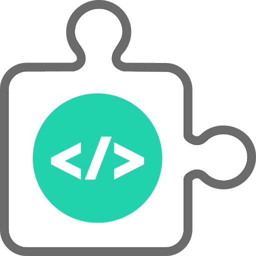

<p-menubar [model]="items">
    <ng-template pTemplate="start">
        <!-- TODO: Change this icon with a photo cartoon of me -->
        
    </ng-template>
    <!-- Desktop buttons -->
    <a pButton type="button" href="https://wa.me/+573208676721?text=Hello%20From%20the%20Website" class="whatsapp-btn hidden-xs-down">Let's Talk <i class="ml-1 pi pi-whatsapp"></i></a>
    <button pButton type="button" class="ml-2 p-button-raised  p-button-rounded p-button-icon-only hidden-xs-down" [ngClass]="{'p-button-secondary': !darkModeStatus, 'p-button-primary': darkModeStatus}" (click)="darkMode()"><i class="pi pi-moon"></i></button>
    <!-- Mobile buttons -->
    <button pButton type="button" class="p-button-rounded p-button-text p-button-icon-only hidden-sm-up"><i class="pi pi-whatsapp p-button-secondary"></i></button>
    <button pButton type="button" class="p-button-rounded p-button-text p-button-icon-only hidden-sm-up" [ngClass]="{'p-button-secondary': !darkModeStatus, 'p-button-primary': darkModeStatus}" (click)="darkMode()"><i class="pi pi-moon"></i></button>
</p-menubar>